Citrix ADC Fundamental Concepts: Part 2 - Certificates/SSL, Authentication, HTTP, VPN Networking, PXE, GSLB
Navigation
- Part 1 – Request-Response, HTTP Basics, and Networking (separate page)
- Change Log
- HTTP Encryption
- Authentication
- HTTP
- ADC VPN Networking
- PXE
- ADC GSLB
:idea: = Recently Updated
Change Log
- 2018 Dec 26 - complete proofread, revised, and expanded
- 2018 Dec 24 - renamed NetScaler to Citrix ADC
Citrix ADC is NetScaler
Citrix renamed their NetScaler product to Citrix ADC. ADC is a Gartner term that means Application Delivery Controller, which is a fancy term that describes a load balancing device that does more than just load balancing.
This article assumes that you have already read the content in Part 1 – Request-Response, HTTP Basics, and Networking
HTTP Encryption
SSL Protocol
SSL/TLS Protocol - SSL (Secure Sockets Layer) and TLS (Transport Layer Security) are two names for the same encrypted session protocol. SSL is the older, more well-known name, and TLS is the newer, less well-known name. The names can usually be used interchangeably, although pedantic people will insist on using TLS instead of SSL. In Citrix ADC, you'll mostly see the term SSL instead of TLS.
- HTTP on top of SSL/TLS - HTTP itself does not support encryption. Instead, a Layer 6 SSL/TLS-encrypted Session is established between the Web Client and the Web Server. Then Layer 7 HTTP packets are sent across the Layer 6 SSL/TLS session. (image from wikimedia)
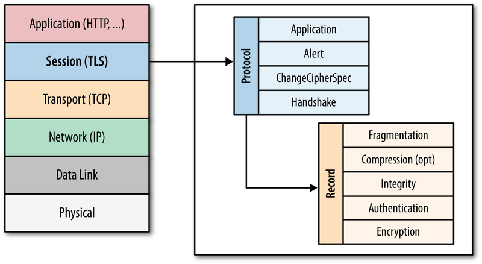
- SSL/TLS can carry more than just HTTP - for example, Citrix ICA Protocol is carried across an SSL/TLS session when ICA traffic is proxied through Citrix Gateway. There is no HTTP in this encrypted traffic. ICA and HTTP are two completely different protocols. Underneath both of them are the same Layer 6 SSL/TLS session protocol.
- HTTPS Protocol is the name that web browsers use to describe HTTP running on top of an encrypted TLS/SSL session. It's the same HTTP data whether the underlying TCP connection is encrypted or not.
{kind=link}
HTTPS Protocol:
- Port 443 - HTTP over SSL/TLS uses a different port number than unencrypted HTTP. The SSL/TLS port number for HTTP data is usually TCP port 443, and is referred to as the https port number. The https port number will not accept HTTP Packets until the SSL/TLS encrypted session is established first.
- Web Server support for https - Web Servers must be explicitly configured to accept https traffic. Enabling SSL/TLS on a web server requires creation of a key pair, a certificate, and binding them to a TCP 443 listener. No certificate configuration is needed on the client side. Below is a screenshot of enabling https on an IIS Web site.
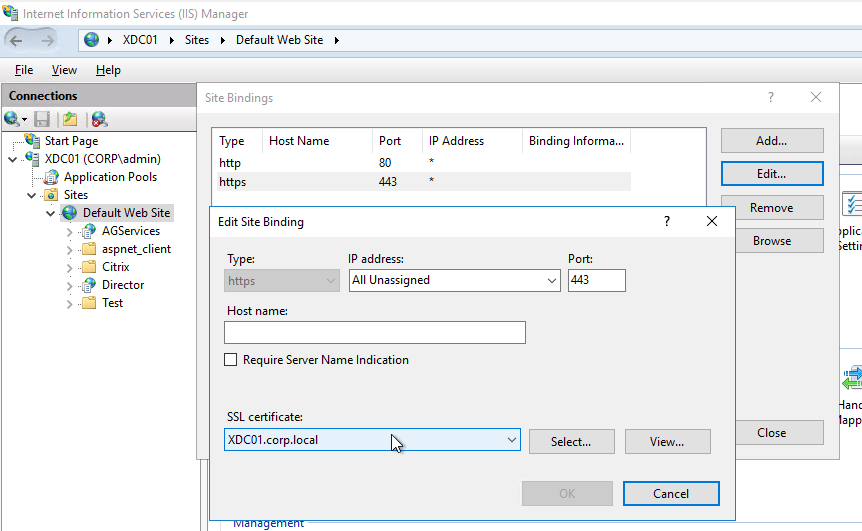
- https URL scheme- Users enter https://FQDN into a web browser's address bar to connect to a web server using the SSL/TLS protocol on TCP 443.
- Disable http? - Once https is enabled on a web server, you can optionally disable clear-text HTTP over TCP 80. Or you can leave the TCP 80 listener enabled and configure it to redirect unencrypted HTTP TCP 80 connections to https TCP 443 encrypted connections.
- See SSL Redirect – Methods for information on how to configure an ADC application to redirect HTTP port 80 to HTTPS port 443.
SSL/TLS versions - There are several versions of the SSL/TLS protocol. Here are the versions from oldest to newest: SSLv2, SSLv3, TLSv1.0, TLSv1.1, TLSv1.2, and TLSv1.3
- After SSLv3, the protocol was renamed to Transport Layer Security (TLS). All versions of TLS are newer than the SSL versions.
- Many networking products use the term SSL to refer to all versions of the protocol, including the TLS versions. For example, in Wireshark, the traffic filters use the word "ssl" instead of "tls". Citrix ADC hosts "SSL" Virtual Servers, but not "TLS" Virtual Servers.
- TLSv1.3 is very new and only recently started being added to products. Citrix ADC 12.1 added support for TLSv1.3.
- TLSv1.2 is the current widely-deployed standard.
- In late 2018 and early 2019, industry security standards are starting to dictate that TLSv1.0 and TLSv1.1 should be disabled in all products and servers. PCI compliance already dictates that TLSv1.0 and TLSv1.1 must be disabled.
- SSLv3 is an old, vulnerable protocol, and must be disabled on all SSL Virtual Servers.
- Default Citrix ADC SSL configuration enables SSL protocol versions SSLv3, TLSv1.0, TLSv1.1, and TLSv1.2. One of the first configuration steps that should be performed on every ADC SSL Virtual Server is to disable SSLv3, disable TLSv1.0, and disable TLSv1.1.
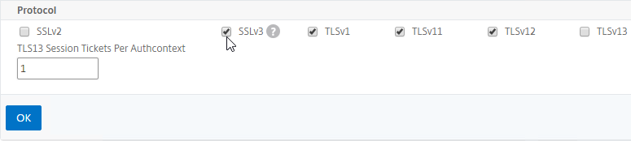
- Newer builds of Citrix ADC let you configure SSL defaults at the global level by enabling the "default SSL profile". See SSL Profiles for details.
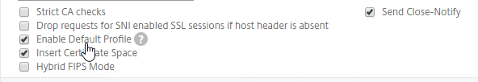
- Newer builds of Citrix ADC let you configure SSL defaults at the global level by enabling the "default SSL profile". See SSL Profiles for details.
- SSLLabs.com can check your SSL Listener to make sure it adheres to the latest SSL security standards.
SSL Performance Cost - First, the SSL Client and SSL Server create an encrypted SSL Session by performing an SSL Handshake. Then HTTP is transmitted across this established SSL Session.
- SSL Handshake is expensive - Establishing the SSL session (SSL Handshake) is an expensive (CPU) operation, and modern web servers and web browsers try to minimize how often it occurs, preferably without compromising security. (image from wikimedia)
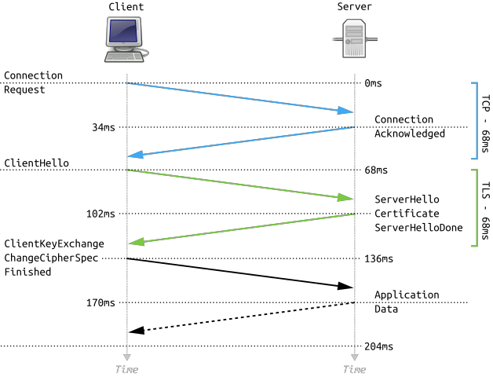
- Bulk encryption - The traffic on top of the established SSL Session is bulk encrypted, which has far less impact than initial SSL Session establishment.
- ADC Appliance SSL Specs - The Citrix ADC appliance model data sheets provide different numbers for SSL Transactions/sec (initial session establishment) and SSL Throughput (bulk encryption).
{kind=link}
SSL Keys
Public/Private key pair - A key pair is called a pair because the Public Key and Private Key are cryptographically linked together. Data encrypted by a Public Key can only be decrypted by one Private Key. Data encrypted by the Private Key can only be decrypted by one Public Key.
- Asymmetric Encryption - traffic encrypted by a Public Key cannot be decrypted by the same Public Key. Any traffic encrypted by the Public Key can only be decrypted by its paired Private Key. This is called Asymmetric because you encrypt with one key and decrypt with a different key. (image from wikimedia)
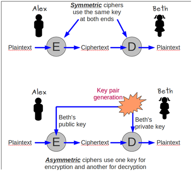
- Private key - The Private Key is called private because it needs to remain private. You must make sure that the Private Key is never revealed to any unauthorized individual. If that were to occur, then the unauthorized person could use the Private Key to emulate the web server, and unsuspecting users might submit private data, including passwords, to the hacker.
- Hardware Security Module (HSM) - if you store the Private Key on an HSM, then it is not possible to export the private key from the HSM and thus nobody can see it. Any use of the private key occurs inside the HSM. Governments and other high security industries require private keys to be stored in HSMs.
- Public key - The Public Key is called public because it doesn't matter who has it. The public key is worthless without also having access to the private key.
{kind=link}
Key size - When you create a public/private key pair, you specify the key size in bits (e.g. 2048 bits). The higher the bit size, the harder it is to crack. However, larger key sizes mean exponentially more processing power required to encrypt and decrypt. 2048 is the current recommended key size, even for Certificate Authorities, which use the same key pair for many years. 2048 balances security with performance.
Symmetric Encryption - With Symmetric Encryption, one key is used for both encryption and decryption. Symmetric Encryption is far less CPU intensive than Asymmetric Encryption. In https protocol, bulk data encryption and decryption is performed by a symmetric key, not asymmetric keys. But a challenge with Symmetric Encryption is how to get both sides of the connection to agree on the one symmetric key.
- During the initial SSL handshake process, the Web Server's public key is transmitted to the SSL Client.
- During the initial SSL Handshake, the SSL Client generates a Session Key for symmetric encryption, encrypts the generated Session Key using the Web Server's Public Key, and then sends the encrypted Session Key to the Web Server. The Web Server uses its Private Key to decrypt the Session Key. Now both sides have the same Symmetric key and they can use that Symmetric Key for bulk encryption and decryption.
Session Key size - the Session Key is much shorter than the private/public key pairs. For example, the Session Key can be 256 or 384 bits, while the public/private key pairs are 2048 bits. Because of their shorter size, Session Keys are much faster at cryptographic operations than public/private key pairs. The length of the Session Key depends on the negotiated cipher, as detailed later.
- Renegotiation - SSL Clients and SSL Servers will sometimes want to redo the SSL Handshake while in the middle of an SSL Session. This is called Renegotiation.
- Because the Session Key is relatively small, a new Session Key needs to be regenerated periodically (e.g. every few minutes or hours). Renegotiation is how the new Session Key is transmitted from one side of the connection to the other side.
Forward Secrecy:
- Without Forward Secrecy, if you take a packet trace, you can use the SSL Server's Private Key to decrypt Session Keys in the packet trace, and use those decrypted Session Keys to decrypt the rest of the packet trace.
- With Forward Secrecy, even if the hacker had access to the server's Private Key, the Private Key cannot be used to decrypt the Session Key, and thus the packet trace cannot be decrypted.
- DH vs RSA - Diffie-Hellman (DH) Key Exchange algorithm enables Forward Secrecy. RSA Key Exchange does not. ECDHE is the modern version of DH Key Exchange that is preferred by security professionals. To achieve Forward Secrecy (strongly recommended), prioritize ciphers that have ECDHE or DHE in their cipher names. Avoid RSA ciphers.
- Troubleshooting - if DHE ciphers are used, then a network administrator cannot decrypt a packet trace. Citrix ADC has some packet trace options that can save the traffic without encryption (SSLPLAIN), or it can save the SSL Session Keys in a file separate from the packet trace. Wireshark can use the Session Keys file to decrypt the packet trace.
Certificates
Server Certificate - every Web Server that listens for SSL/TLS traffic must have a Server Certificate. Certificates are small text files that contain a variety of information including: the web server's FQDN, the web server's public key, the certificate's expiration date, and a certificate signature created by a Certificate Authority.
- Keys and certificates are different things - The public/private key pair, and the server certificate, are two different things. First, you create a public/private key pair. Then you create a certificate that contains the public key.
- UNIX Key files and Certificate files - Citrix ADC is UNIX-based, which means that keys and certificates are stored in separate files.
- Windows private keys - Windows stores the private key separately from the certificate, but the location of the private key is not easily reachable by a Windows administrator. When you double-click a certificate on Windows, at the bottom of the certificate window is a message indicating if Windows has a separate private key for that certificate. To get access to the private key, you export the certificate with private key to a .pfx file. The password-protected .pfx file contains both the certificate and the private key.
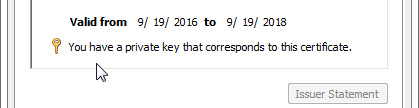
SSL Handshake and Certificate Download - during the initial SSL Handshake, the Server's Certificate is downloaded to the SSL Client. The SSL Client extracts the web server's public key from the downloaded server certificate.
Certificates provide a form of authentication - The SSL Client uses the server's certificate to authenticate the SSL-enabled web server so that the SSL Client only sends confidential data to trusted web servers. There are several fields in the SSL Server's certificate that clients use to verify web server authenticity. Each of these fields is detailed later in this section.
- Subject and/or Subject Alternative Name must match the hostname entered in the browser's address bar.
- CA Signature - the server's certificate must be signed a trusted Certificate Authority. SSL Clients have a mechanism for trusting particular Certificate Authorities.
- Validity Dates - the certificate must not be expired.
- Revocation - the certificate must not be revoked.
Types of certificates - there are different types of certificates for different use cases. All certificates are essentially the same, but some of the certificate fields control how a certificate can be used:
- Server Certificates - when linked to a private key, these certificates enable encrypted HTTP.
- Certificate Authority (CA) Certificates - used by a SSL client to verify the CA signatures contained within a Server Certificate.
- Client Certificates - used by clients to authenticate the client machine or user to the web server. Requires a certificate and private key on the client side.
- SAML Certificate - self-signed certificate exchanged to a different organization to authenticate SAML Messages (federation).
- Code Signing Certificate - developers use this certificate to digitally sign the applications they developed.
Digital Signatures - Signatures are used to verify that a file has not been modified in any way. A Hashing Algorithm (e.g. SHA256) produces a hash of the file. A Private Key encrypts the hash. When a machine receives the signed file, the receiving machine generates its own hash of the file. Then it decrypts the file's signature using the signer's Public Key and compares the hash in the file with the hash that the receiving machine generated. If the computed hash matches the hash in the signature, then the file has not been modified.
- The machine that received the file must have access to the Public Key that is paired with the Private Key that signed the file at the sender. These Public Keys are usually distributed through certificates.
Server Certificate Signature - Server certificates are digitally signed by a trusted third party, formally known as the Certificate Authority (CA). This third party verifies that the organization that produced the server certificate actually owns the server that is hosting the certificate.
- Publicly-signed Certificates are not free - For public CAs, the owner of the server certificate pays the public CA to sign the server's certificate.
- CA uses the CA's Private Key to sign the server certificate - The CA generates a hash of the server certificate and signs the hash using the CA's Private Key.
- Verify CA signature - The SSL Client extracts the Issuer field from the server certificate and matches the Issuer name with one of the CA certificates installed on the SSL Client machine. The SSL Client then extracts the public key from the locally installed CA certificate and uses that CA's public key to verify the signature on the server certificate. If the hashes match, then the server certificate is "trusted".
CA certs are installed on SSL clients - CA's pay Microsoft, Chrome, Mozilla, Apple, etc. to install their Root CA Certificates on client machines.
- Out-of-band installation - Root CA Certificates are always installed out-of-band and are not delivered by the web server during the SSL Handshake. If a CA certificate is missing from the SSL Client machine, then the user must install it manually by using a local Certificates management console, or through some other administrator-controlled process (e.g. group policy).
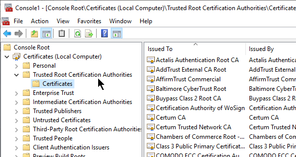
- Trust is defined by locally installed CA certificates - Any server certificate signed any of the CA certificates installed on a SSL Client machine are automatically trusted.
- Stop trusting one CA - Sometimes a Certificate Authority is compromised, or doesn't do a good enough job of verifying server certificate ownership. To stop trusting certificates signed by a bad CA, simply uninstall the CA's certificate from the SSL Client machine.
Private Certificate Authority - instead of paying for a public certificate authority to sign your server certificates, you could easily build your own private Certificate Authority. Windows Servers have a built-in role called Certification Authority. Or you can use your Citrix ADC as a private certificate authority.
- Private CA Root Certificate Installation - the Root CA certificate for the private certificate authority is not installed on client machines by default. Instead, the administrator of the client machines must distribute the private CA Root Certificate using group policy or some other out-of-band installation method.
- Private CA-signed server certificates are commonly used on internal servers where administrators have full control of the client machines. But if any non-managed client machine needs to trust your private CA-signed server certificates, then it's usually easier to purchase a public CA-signed server certificate because the public CA root certificates are already installed on all client machines.
- Cannot purchase public CA-signed server certificates for non-routable DNS names - each server certificate contains the FQDN that users use to access the web server. If the server's FQDN ends in one of the Internet DNS Top Level Domains (TLD), like .com, then you can pay a public CA to sign your certificate. However, if the FQDN ends in a private DNS suffix, like .local, then you cannot purchase a public CA signature and instead you must build your own private CA to sign the server certificate.
Self-signed certificate - Instead of using a third party CA's private key to encrypt the certificate file hash, it's also possible for a certificate to use its own key pair to sign its own certificate. In this case, the Issuer of the certificate and the Subject of the certificate are the same and this is called a Self-signed certificate. Most web browsers will not accept self-signed server certificates for SSL/TLS connections. But Self-signed certificates are useful for other purposes, including Root CA certificates, and SAML certificates.
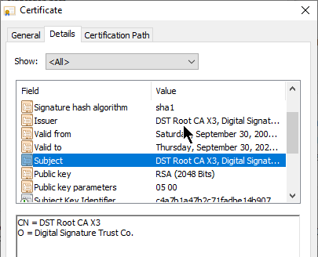
- Self-signed certificates and internally-signed certificates are two different things - If you build your own private Certificate Authority and use the private CA to sign your internal server certificates, then the internal server certificates are not self-signed, but rather they are "internally-signed" or "private-signed". Self-signed certificates have the same value for Issuer and Subject. "private-signed" certificates have different values for Issuer and Subject because the Issuer is a private CA and not itself.
CA Chain - The server certificate can be signed by one CA certificate, or the server certificate can be signed by a chain of CA certificates.
- Root CA Certificate - the top of the CA certificate chain is the Root CA certificate. The Root CA certificate is self signed. If the Root CA certificate is installed on a SSL Client machine, then all CA certificates that chain to the root are trusted.
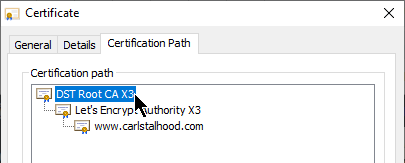
- Intermediate CA certificates - In the CA Signature Chain, between the Server Certificate and the Root CA Certificate, are Intermediate CA Certificates. The Root CA certificate almost never directly signs server certificates. Instead, the Root CA certificate signs an Intermediary or Issuing CA Certificate and the Issuing CA Certificate signs the server certificate.
- Intermediate CA certificates are not installed on SSL client machines - Instead, Intermediate CA certificates must be transmitted to the SSL Client from the SSL Server during the SSL Handshake.
- If Intermediate CA certificate is not transmitted during SSL Handshake, then CA chain is broken - when the SSL Client receives the server certificate, it extracts the server certificate's Issuer field and looks for a CA certificate that matches that Issuer name. Since the server certificate's Issuer is an Intermediate CA certificate and not a Root CA certificate, and since intermediate CA certificates are not installed on the client machines, the client machine won't find a matching CA certificate unless one was sent by the SSL server.
- Link Intermediate CA Certificate to Server Certificate - On a Citrix ADC, you install the Server Certificate under the Server Certificates Node. You also install the Intermediate CA certificate under the CA Certificates node. Then you right-click the Server Certificate and Link it to the Intermediate CA Certificate. During the SSL Handshake, the Citrix ADC transmits both the server certificate and the intermediate CA certificate.
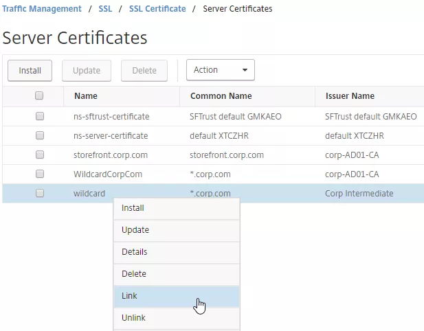
- IIS and Intermediate CA certificates - On IIS, you simply install the Intermediate Certificate in the web server computer's Intermediate CA certificate store. IIS (Windows) automatically knows which intermediate CA certificate goes with the server certificate and it transmits both during the SSL Handshake phase.
- The Root CA certificate must never be transmitted by the SSL Server during the SSL Handshake - you might be tempted to install the self-signed CA root certificate on the Citrix ADC and then link it to the intermediate CA certificate. Don't do that. Only the Intermediate CA certificates, not the Root, can be transmitted from the ADC. The Root CA certificate is already installed on the client machine through an out-of-band operation (e.g. included with the operating system). If the Root CA certificate could be transmitted by the SSL Server, then the entire third party trust model is broken.
- If the root certificate is transmitted during the the SSL Handshake phase, then SSL Labs will report this as "Chain issues: Contains anchor".
To create a certificate - The process to create a certificate is as follows:
- Create keyfile - Use OpenSSL or the Citrix ADC GUI to create an RSA public/private key pair file.
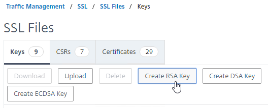
- Keypairs created by OpenSSL must be converted to RSA format.
- ECDHE ciphers and DHE ciphers use RSA keypairs.
- Create Certificate Signing Request (CSR) - Use OpenSSL or Citrix ADC GUI to create a Certificate Signing Request (CSR). The CSR contains the public key, and several other fields, including: server's DNS name, and name of the Organization that owns the server.
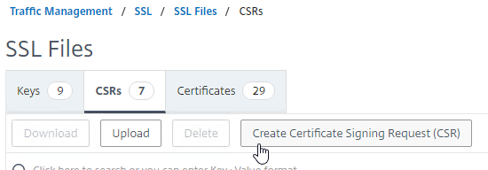
- Send CSR to CA - Send the CSR to a Certificate Authority (CA) to get a CA signature. Public CAs usually charge a fee for this service.
- CA verifies ownership - The CA verifies that the Organization Name specified in the CSR actually owns the server's DNS name.
- One method is for the CA to email somebody at the organization that owns the web server.
- More stringent verifications include background checks for the organization's DUNS name. Higher verification usually requires a higher fee.
- CA signs the certificate - If owner verification is successful, then the CA signs the certificate and sends it back to the administrator. The CA can use a chained intermediate CA Certificate to sign your Server certificate.
- Complete certificate request - The administrator installs the signed server certificate and links it with the key file. In IIS, this is called "Complete Certificate Request". In Citrix ADC, when installing a cert-key pair, you browse to both the signed certificate file, and the key file.
- Create a TCP/SSL 443 listener and bind the certificate to it - Configure the web server to use the certificate. In IIS, add a https binding to the Default Web Site and select the certificate. In Citrix ADC, create a SSL Virtual Server, and bind the certificate key-pair to it.
Certificate/key file storage on Citrix ADC- On Citrix ADC, certificate files and key files are stored in /nsconfig/ssl.
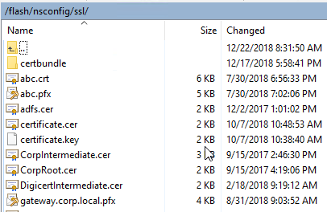
Certificate File Format - There are several certificate file formats: Base64, DER, and PFX.
- Base64 is the default encoding for certificate files on UNIX/Linux systems, including Citrix ADC. This format is also known as PEM. Base64 files look like text files with the first line that says: "-----BEGIN CERTIFICATE-----"
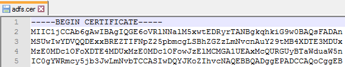
- DER Format - On Windows, if your certificate doesn't have a private key associated with it, then you can save the certificate to a file in DER format. DER format looks like a binary file, not a text file.
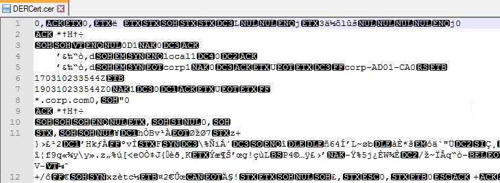
- Newer versions of ADC can automatically detect that a certificate file is in DER format.
- Older versions of ADC require you to indicate that the certificate file is DER format instead of Base64.
- PFX format - On Windows, if you export a certificate with private key, then both are stored in a password-protected file with .pfx extension. This file format is also known as PKCS#12.
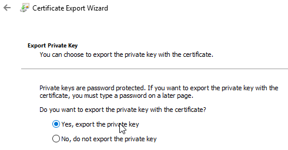
- Newer versions of Citrix ADC can directly import .pfx files.
- Citrix ADC can also use OpenSSL to convert a .pfx file into a Base64 PEM file that contains both the certificate and the RSA key.
Private Keys should be encrypted - the key file that contains the Private Key should be encrypted, usually with a password. On Citrix ADC, when creating a key pair, you enable PEM Encoding and set it to 3DES (Triple DES) or AES 256 encryption. OpenSSL asks you to enter a permanent password to encrypt the private key. You will need this password whenever you install the certificate key pair.
- When creating an RSA key file, specify PEM Encoding Algorithm and Passphrase - specifying a PEM Encoding Algorithm and Passphrase are optional. Password-protecting the .key file is recommended.
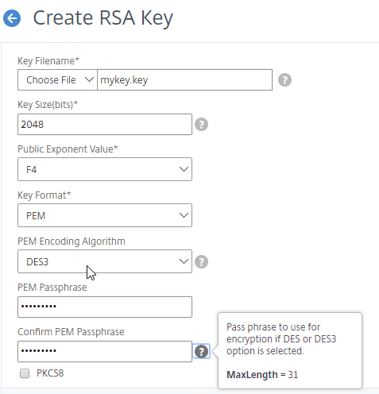
- When converting a PFX file to PEM, encrypt the PEM private key - Specify a PEM encoding password when performing this conversion.
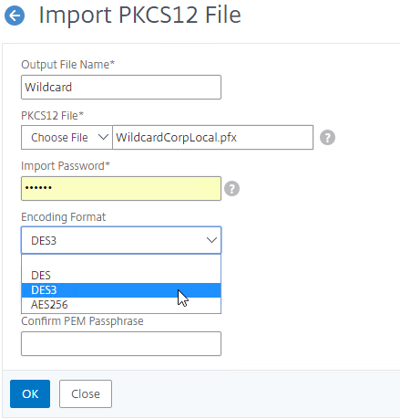
- Hardware Security Module (HSM) - Hardware Security Modules (HSM) are physical devices that destroy their contents if there's any attempt of physical compromise , which means they are the perfect place to store your private keys. The Citrix ADC FIPS appliances include a HSM module inside the FIPS appliance. Or, you can connect a Citrix ADC to a network-addressable HSM appliance. The HSM performs all private key operations so that the private key never leaves the HSM device.
- Smart Card - Smart Cards require the user to enter a PIN to unlock the smart card to use the private key, similar to an HSM. Smart Cards are typically used with Client Certificates, which are detailed later.
Certificate Fields
Subject field - One of the fields in the Server Certificate is called Subject. Look for the CN= section of this field. CN means Common Name, which might be familiar to LDAP (e.g. Active Directory) administrators. The Common Name is the DNS name of the web server.
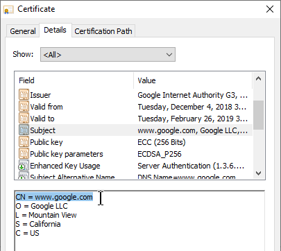
- Public CAs require FQDNs, not short DNS names - Public CAs require that the Common Name of your Subject field be a FQDN and not a short DNS name (left part of the DNS name before the first dot). Internal web servers are frequently accessed using short DNS names instead of FQDNs. Certificates for short DNS names can only be acquired from a private CA.
Subject Alternative Names - Another related Certificate field is Subject Alternative Name (SAN). The Subject field (Common Name) only supports a single DNS name. Subject Alternative Name supports as many DNS names as desired.
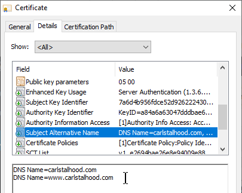
- Public CAs charge extra for each additional SAN Name. When you submit a CSR to a public CA, the public CA gives you an opportunity to enter more SAN Names. The more SAN Names you add, the higher the cost of the certificate.
- CSRs ask for Common Name, not SAN names - When creating a CSR, put your server's primary FQDN in the Common Name (Subject) field. When you submit the CSR to a Public CA, the Public CA will automatically copy your Common Name into the Subject Alternative Name field.
- OpenSSL lets you include SAN Names in the CSR. However, most CAs ignore any SAN Names in the CSR.
- Microsoft CA does not support SAN Names by default - Microsoft CA does not support SAN names by default. Microsoft CA will not copy the Common Name to the Subject Alternative Name. Search Google for instructions to enable Microsoft CA to accept manually entered SAN Names.
URL Hostname Matching against Server Certificate's Subject and Subject Alternative Name (SAN) fields
- User enters URL Hostname in browser address bar - User opens a browser and enters https://hostname in the browser's address bar to connect to a web server. The hostname is extracted from the entered URL and then matched with the Common Name field or Subject Alternative Name field of the downloaded sever certificate. If the entered hostname doesn't match the certificate's Common Name or Subject Alternative Name field, then a certificate error is displayed. To avoid certificate errors, your server certificates must have a Subject Common Name or Subject Alternative Name that matches the DNS Names that users will use to browse to your SSL web server.
- Server Name Indication (SNI) - If the web server is hosting multiple SSL websites on one IP address, which server certificate should be sent to the client so the client can do its URL host name matching? In newer versions of browsers (Windows XP is too old) and web servers, Server Name Indication (SNI) was added to the SSL handshake. The SSL Client now sends the URL hostname from the browser's address bar to the web server so the web server can select a certificate to send back to the SSL Client.
- Chrome only accepts Subject Alternative Names, not Common Name - Chrome recently started ignoring the Subject and Common Name fields of the server certificate and now instead only does hostname matching against the Subject Alternative Name (SAN) field of the server certificate.
- SAN Names let one certificate match multiple FQDNs - You might have an SSL Server listening on several FQDNs. Instead of buying a separate certificate for each FQDN, purchase one certificate with multiple SAN Names.
- If your web server is reachable at both company.com and www.company.com, then add both FQDNs to the SAN Names field of the server certificate.
Wildcard certificate - The Certificate Common Name can be a wildcard (e.g. *.company.com) instead of a single DNS name. This wildcard matches all FQDNs that end in .company.com.
- The wildcard only matches one word and no periods to the left of .company.com. It will match www.company.com, but it will not match www.gslb.company.com, because there's two words instead of one. It will also not match company.com because it requires one word where the * is located.
- Wildcard certificates cost more from Public CAs than single name certificates and SAN certificates.
- Wildcard certificates are less secure than single name certificates, because you typically use the same wildcard certificate on multiple web servers, and if the wildcard certificate on one of the servers is compromised, then all are compromised.
- Public CAs will automatically copy the wildcard *.company.com into the Subject Alternative Name field. For Microsoft CA, you must manually specify *.company.com as a Subject Alternative Name, assuming you enabled Microsoft CA to accept Subject Alternative Names.
Validity Dates - Another field in the certificate is Valid to (expiration date). If the date is expired, then the client's browser will show a certificate error. When you purchase a certificate, it's only valid between 90 days and 3 years, with CAs charging more for longer terms.
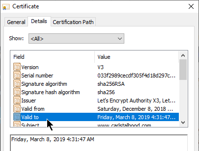
- Expiration Warning - Citrix ADM (Application Delivery Management) can alert you when a Citrix ADC certificate is about to expire. Public CAs will also remind you to renew it.
- Renew with existing keys? - When renewing the certificate, you can create a new SSL key pair, or you can use the existing key pair. If you create a new key pair, then you need to create a new CSR and submit it to the CA. If you intend to use the existing keys, then simply download the updated certificate from the CA after paying for the later expiration date.
- Let's Encrypt issues certificates with 90 days expiration - Let's Encrypt is a free public CA that is fully automated. Certificates issued from Let's Encrypt expire 90 days after issuance. Shorter expiration periods are more secure than longer expiration periods. Because of the short expiration periods, you must fully automate the Let's Encrypt CSR generation, CA signature, and certificate installation process.
Certificate Revocation - certificates can be revoked by a CA. The list of revoked certificates is stored at a CA-maintained URL. Inside each SSL certificate is a field called CRL Distribution Points, which contains the URL to the Certificate Revocation List (CRL). Client browsers will download the CRL to verify that the SSL server's certificate has not been revoked. Revoking is usually necessary when the web server's private key has been compromised.
- CAs might revoke a certificate when Rekeying - if you rekey a certificate, the certificate with the former keys might be revoked. This can be problematic for wildcard certificates that are installed on multiple machines, since you only have a limited time to replace all of them. Pay attention to the CA's order form to determine how long before the prior certificate is revoked.
- Online Certificate Status Protocol - An alternative form of revocation checking is Online Certificate Status Protocol. The address for the OCSP server can be found in the certificate's Authority Information Access field.
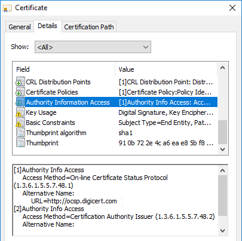
SSL Ciphers
A Cipher is a collection of algorithms that dictate how session keys are created and how the bulk encryption is performed.
Cipher Suites are negotiated - During the SSL Handshake, the SSL Client and the SSL Server negotiate which cipher algorithms to use. A detailed explanation of ciphers would require advanced mathematics, but here are some talking points:
- Recommended list of ciphers - Security professionals (e.g. OWASP, NIST) publish a list of the recommended, adequately secure, cipher suites. These ciphers are chosen because of their very low likelihood of being brute force decrypted within a reasonable amount of time.
- Higher security means higher cost. For SSL, this means more CPU on both the web server (Citrix ADC), and SSL Client. You could go with high bit-size ciphers, but they require exponentially more hardware.
- Each cipher suite is a combination of cipher technologies. There's a cipher for key exchange. There's a cipher for bulk encryption. And there's a cipher for message authentication. So when somebody says "cipher", they really mean a suite of ciphers.
Ephemeral keys and Forward Secrecy - ECDHE ciphers are ephemeral, meaning that if you took a network trace, and if you had a the web server's private key, it still isn't possible to decrypt the captured traffic. This is also called Forward Secrecy.
- DHE = Ephemeral Diffie Hellman, which provides Forward Secrecy.
- EC = Elliptical Curve, which is a formula that allows smaller key sizes, and thus faster computation.
Ciphers in priority order - The SSL server is configured with a list of supported cipher suites in priority order. The top cipher suite is preferred over lower cipher suites.
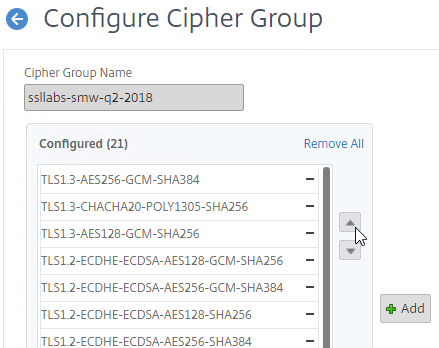
- The highest common cipher between SSL Server and SSL Client is chosen - When the SSL Client starts an SSL connection to an SSL Server, the SSL Client transmits the list of cipher suites that the SSL Client supports. The SSL Server then chooses the highest matching cipher suite. If neither side supports any of the same cipher suites, then the SSL connection is rejected.
Citrix-recommended cipher suites - See Scoring an A+ at SSLlabs.com with Citrix NetScaler – Q2 2018 update for the list of cipher suites that Citrix currently recommends. Every SSL Virtual Server created on the Citrix ADC should be configured with this list of cipher suites in the order listed.
- GCM ciphers seem to be preferred over CBC ciphers.
- EC (Elliptical Curve) ciphers seem to be preferred over non-EC ciphers.
- Ephemeral ciphers seem to be preferred over non-Ephemeral ciphers.
- This list does not include TLS 1.3 ciphers so you'll need to manually add the TLS 1.3 ciphers to the cipher group.
Client Certificates
Client Certificate - Another type of certificate is Client Certificate. This is a certificate with private key, just like a Server Certificate. Client Certificates are installed on client machines, and usually are not portable (the private key can't be exported). Client machines use the Client Certificate to authenticate the client to web servers. This client certificate authentication can simply verify the presence of the certificate on a corporate managed device. Or the user's username can be extracted from the client certificate and used to authenticate the user.
Client Private Key - The client certificate authentication process requires access to the paired client private key. If the paired client private key is not accessible, then the client certificate cannot be used for client authentication with the web server. The client private key can be installed on a particular machine (e.g. in the machine's Trusted Platform Module), or the client private key can be portable (e.g. on a Smart Card).
- Smart cards have a client certificate and private key installed on them. Users enter a PIN number to unlock the smart card to use the client certificate's private key. Smart Cards eliminate needing to enter a password to authenticate with a web server.
- Virtual Smart Cards - There are also virtual smart cards, which use hardware features of the client device to protect the client certificate. The client's TPM (Trusted Platform Module) encrypts the private key. If the client certificate were moved to a different device, then the new device's TPM wouldn't be able to decrypt the private key. Windows Hello for Business and Passport for Work are examples of this technology.
Device Certificates and User Certificates - some client certificates, called device certificates, are assigned to the machine to identify the compliance status of the machine. Other client certificates are assigned to the user so the user can use the user certificate to authenticate with web-based services.
- Multi-factor authentication with user certificates - The user certificate can be the only authentication method (password-less), or the user certificate can be provided along with additional authentication material for multi-factor authentication.
Password-less authentication - Client Certificates are used extensively in "password-less" authentication scenarios. For example, your client device can be joined to a cloud-hosted device management service, like Azure Active Directory or Intune. Once enrolled, the cloud device management service pushes down a client certificate that is used for future authentications to the cloud service. The cloud device management service also pushes down security policies that might require the user to enter a PIN number or biometric authentication method to unlock the client certificate. Once unlocked, the client certificate can be used to authenticate the machine and/or user to cloud-based services.
Client Certificates for Machine Authentication - some companies want to restrict access to a web server from only company-managed machines. One method of ensuring that the device is company-managed is to push a client certificate (with private key) to the devices, and then require the device's client certificate in addition to the user's normal authentication credentials.
Citrix Federated Authentication Service (FAS) uses user certificates for VDA authentication - In a SAML authentication scenario (described later), Citrix VDA does not have access to the user's password. The only other option to authenticate with Windows is using a user certificate, also called a smart card certificate. The Citrix FAS server automatically generates user certificates for each user that authenticates to StoreFront. The private keys for these user certificates are stored on the FAS server. When the user connects to the VDA, the VDA retrieves the user's certificate and private key from the FAS server and uses the user certificate to perform client certificate authentication (smart card authentication) with the Active Directory Domain Controllers.
HTTP Authentication
Citrix ADC Authentication Overview
AAA is short for Authentication, authorization, and accounting. AAA is a generic term for performing authentication against remote authentication servers.
Authentication Policy Bind Points - Citrix ADC supports several authentication mechanisms at three different bind points:
- Citrix Gateway Virtual Server
- AAA Virtual Server
- AAA Virtual Server is only available in Citrix ADC Advanced Edition (formerly known as Enterprise Edition) and Premium Edition (formerly know as Platinum Edition). ADC Standard Edition does not include AAA Virtual Servers.
- Global - for authentication for management access
Load Balancing and AAA - Load Balancing Virtual Servers redirect users to a AAA Virtual Server to perform the authentication. After authentication, the user is redirected back to the Load Balancing Virtual Server.
Citrix Gateway and AAA - Citrix Gateway can use a AAA Virtual Server for nFactor authentication. Or you can bind classic authentication policies directly to the Gateway Virtual Server.
- AAA licensing - AAA Virtual Server is only available in Citrix ADC Advanced Edition (formerly known as Enterprise Edition) and Premium Edition (formerly know as Platinum Edition). ADC Standard Edition does not include AAA Virtual Servers.
SSL/TLS - All ADC HTTP-based authentication methods require the client to be connected to the ADC using SSL/TLS protocol. If authentication collects credentials using an HTML Form, then the form submission is transferred to the ADC over the encrypted SSL/TLS connection.
nFactor - nFactor allows a series of authentication web forms and authentication policies to be chained together for almost limitless customization of the authentication process. nFactor can be configured on any AAA Virtual Server, including AAA Virtual Servers used by Citrix Gateway and Load Balancing.
- New ADC authentication features are nFactor only - Citrix seems to be adding new authentication features only to the nFactor platform. For example, StoreFrontAuth, Native One-time Password (OTP), and Gateway Self-Service Password Reset (SSPR) require nFactor. These features are not available on pure Citrix Gateway without a AAA Virtual Server. Be mindful of the licensing requirement for AAA.
- Endpoint Analysis Scans in nFactor - nFactor also supports Endpoint Analysis and Device Certificate authentication. These were formerly Gateway-only features. With nFactor, they can be used with Load Balancing authentication too.
Authentication Policy Syntax - On Citrix ADC, Authentication Policies can be created using Classic Syntax, or Default (Advanced) Syntax.
- Classic Syntax authentication policies can be bound to all three bind points.
- The expression
**ns_true**is an example of Classic Syntax.
- The expression
- Default Syntax (Advanced Syntax) authentication policies cannot be bound to a Gateway Virtual Server. The only way for a Gateway to use Default Syntax authentication policies is through a AAA Virtual Server and nFactor authentication.
- The expression
**true**is an example of Default Syntax.
- The expression
- Classic Syntax deprecation - Citrix has announced that Classic Syntax authentication policies will be removed from future versions of Citrix ADC. It is not clear how this affects Citrix Gateway licensing since ADC Standard Edition does not include AAA or nFactor.
NSIP is Source IP for authentication - By default, Citrix ADC uses its NSIP (management IP) as the Source IP when communicating with authentication servers.
- To use SNIP, load balance - You can force authentication to use a SNIP by load balancing the authentication servers, even if there's only one authentication server. In this case, the NSIP connects to a VIP, which uses a SNIP to connect to the authentication server. In a network trace, you'll see both the NSIP and the SNIP.
Back-end Single Sign-on - Once a user has been authenticated by Citrix ADC, ADC can usually perform Single Sign-on to the back-end resource (web page, Citrix StoreFront, etc.).
- Different authentication methods for client and server - The authentication method that ADC uses to authenticate the user on the client side doesn't have to match the authentication method that ADC uses for back-end Single Sign-on. For example, Citrix ADC can use LDAP+RADIUS on the client side, and convert it to Kerberos on the server side.
AAA Groups - some authentication methods support extraction of user group membership from the authentication server. If you run **cat /tmp/aaad.debug** during a user authentication, it should show you any groups that it extracted for the user. On ADC, you can add matching groups in three different places: System (global), AAA, and Gateway. The groups you add on ADC must have names that match exactly (case sensitive) with the group names that were extracted from the authentication server.
- System Groups provide authorization to the ADC management console GUI. You bind Command Policies to the System Groups. Command Policies are collections of Regular Expressions that match permitted ADC CLI commands. For details, see LDAP Authentication for Management.
- AAA Groups (not Gateway) provide authorization to back-end web servers and allow different Single Sign-on configurations for different AAA Groups.
- Gateway AAA Groups provide different Gateway Policies for different AAA Groups. You can bind the following to each AAA Group: Gateway Session Policies, VPN Authorization Policies, VPN IP Pools, Traffic Policies for SSON to back-end servers, Intranet Applications for VPN Split Tunnel, etc. For details, see SSL VPN: AAA Groups.
Default Authentication Group - Many of the ADC Authentication Policies/Servers have a field called Default Authentication Group. If the user successfully authenticated with this authentication server, then the user is added to the Default Authentication Group. If you create a System Group, AAA Group, or Gateway AAA Group with the same case sensitive name that you specified in the Default Authentication Group field of authentication server, then you can bind policies that only apply to users that authenticated with a particular authentication server.
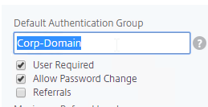
Citrix ADC Authentication Methods Summary
This section is just a summary of some of the available authentications on Citrix ADC. See later sections for detailed explanations of the most commonly used authentication methods.
Citrix StoreFront authentication methods are limited - Citrix StoreFront has native support for Domain Authentication, Kerberos (aka Domain Pass-though), and SAML. StoreFront's SAML capabilities are limited. If you need any authentication beyond what StoreFront supports, then you need to offload StoreFront authentication to Citrix ADC and Citrix Gateway. RADIUS is a glaring omission from the list of supported StoreFront authentication protocols.
- Single Sign-on (SSON) from Citrix Gateway to StoreFront - after the Citrix Gateway authenticates the user, the ADC can SSON to StoreFront so StoreFront doesn't have to ask for authentication again.
- Citrix Gateway Callback - for password-less SSON from ADC to StoreFront, StoreFront can initiate a back-channel connection from StoreFront to ADC to verify that the the ADC actually authenticated the user. This is called the Gateway Callback URL.
- SmartAccess - The Gateway Callback URL is also used by StoreFront to get more information about the authentication context, which can later be used in Citrix Virtual Apps and Desktops (CVAD) SmartAccess configurations.
LDAP for Active Directory authentication - Citrix ADC supports LDAP protocol to authenticate with Domain Controllers.
- LDAP vs Kerberos - LDAP is just one of the authentication protocols supported by Active Directory. Another common authentication mechanism is Kerberos. Kerberos and LDAP are completely different technologies.
- HTML logon page - Users typically enter LDAP credentials in a HTML Form logon page generated by the Citrix ADC.
- LDAP Protocol - Citrix ADC then uses LDAP protocol to transmit the entered credentials to a Domain Controller for verification. Ideally, LDAP Protocol should be encrypted using Domain Controller certificates.
RADIUS for multi-factor authentication - Citrix ADC supports RADIUS protocol to authenticate to multi-factor authentication products.
- No Native SecurID support - Citrix ADC does not have native support for RSA SecurID so RADIUS must be used instead.
- RADIUS is supported by almost every multi-factor authentication product - but RADIUS is usually not enabled on the product by default.
- On-prem RADIUS servers - Cloud-hosted authentication products, like Duo and Azure MFA, require installation of an on-premises RADIUS server. Duo has a program called the Duo Proxy, which supports RADIUS. Azure MFA has a plug-in for Microsoft Network Policy Server, which is a RADIUS server.
- RADIUS credentials can be collected by a HTML logon page - RADIUS credentials are typically a PIN number plus a passcode displayed on a smartphone. Citrix ADC uses the RADIUS protocol to transmit the entered credentials to an authentication server for verification.
- RADIUS supports non-password authentication methods, like phone calls and text messaging. For these methods, the user does not enter anything in the RADIUS password field on the HTML logon page. Or, the Citrix ADC administrator can hide the RADIUS password field from the HTML logon page. Even if the field is hidden, Citrix ADC still contacts the RADIUS server to perform the password-less authentication.
- RADIUS Challenge - RADIUS servers can send back a prompt (RADIUS Challenge) asking the user to provide more authentication information. Some send back an HTML form asking the user what kind of authentication to perform - phone call, SMS, phone notification, etc. Citrix ADC will happily display the RADIUS Challenge to the user.
- HTML-based RADIUS Challenges might not work in Citrix Receiver or Citrix Workspace app.
RADIUS is typically combined with LDAP.
- A single HTML logon page can ask the user to enter both the AD password and the two-factor passcode at the same time.
- Citrix ADC uses LDAP to authenticate the user into Active Directory.
- Citrix ADC uses RADIUS to verify the two-factor passcodes.
- Citrix Receiver and Citrix Workspace app require special configuration to support RADIUS as a second password field. Specifically, the LDAP password field and the RADIUS password field must be swapped.
SAML offloads authentication from the website or ADC to a separate Identity Provider (IdP) - The web site (and ADC) the user is trying to access is called the Service Provider (SP), which redirects the user to an Identity Provider (IdP) to perform the offloaded authentication. The SP and IdP can be different organizations.
- Identity Providers usually require multi-factor authentication.
- The user's password stays at the Identity Provider. The Service Provider never sees the user's password.
- Trust between the Identity Provider and the Service Provider is provided by certificates. The two entities share certificates with each other to verify each other's identity using digital signatures.
Kerberos is another method of authenticating with Active Directory.
- Kerberos authentication and LDAP authentication are completely different authentication methods.
- Kerberos tickets - Kerberos authentication uses tickets that are provided by a Domain Controller. The client machine must be able to communicate with a Domain Controller to get the tickets. This means Kerberos usually doesn't work on the Internet, at least not without a VPN connection.
- If Citrix ADC uses Kerberos to Single Sign-on to the back-end web servers, then Citrix ADC needs connectivity to internal DNS and internal Domain Controllers to get the tickets.
OAUTH allows a user to delegate service access to a separate program. The program can then access a different Service (HTTP API) as the user but without the user being present. This is a form of delegation.
- OAUTH is used extensively in cloud services. If you see Google, Twitter, Facebook, or Azure Active Directory asking you to authorize a program to access your Profile information, then that's OAUTH.
- Azure Active Directory is primarily an OAUTH directory. It also supports SAML.
- Azure Active Directory does not support Kerberos or LDAP.
- Consent Form - If a program needs to access a website on your behalf, then the program will redirect you to the website's OAUTH Authorization Server to authorize the delegation by presenting you with a Consent Form. The Consent Form indicates the permissions that the program will have in your account. Once you approve the access, the program can then access your account directly without needing to ask you for permission again.
- Access Token - The OAuth Authorization Server returns an Access Token to the program, which can then be used by the program to authenticate to HTTP-based APIs. The program automatically renews the Access Token periodically by asking to OAUTH Authorization Server to refresh the Access Token.
- Revoke Access Token - A user can revoke a program's Access Token so the program can no longer access the user's account.
- OpenID Connect is an authentication mechanism built on top of OAUTH where the goal is to get an ID Token instead of an Access Token.
- The ID Token makes OAUTH operate more like SAML and can be used in place of SAML.
- JWT instead of XML - The OpenID ID Token is a signed JSON Web Token (JWT), instead of an XML document that's used in SAML.
- Book on OAuth - For an excellent book on OAuth and OpenID Connect, see OAuth 2 in Action.
StoreFrontAuth delegates Active Directory authentication to an internal Citrix StoreFront server. StoreFront servers are usually domain-joined so it's easier for StoreFront to perform the domain authentication. With StoreFrontAuth, you no longer need to perform LDAP authentication on the Citrix ADC. However, since StoreFront doesn't support RADIUS, you'll still need the ADC to perform RADIUS authentication.
- StoreFrontAuth requires the ADC appliance to be licensed for nFactor authentication.
Citrix ADC Native OTP (one-time passwords) - instead of purchasing a multi-factor authentication product, Citrix ADC has native support for two-factor passcode authentication using smart phone apps like Google Authenticator.
- ADC Native OTP requires Citrix ADC Advanced Edition (formerly know as Enterprise Edition) because it relies on nFactor.
- ADC Native OTP stores client secrets in an Active Directory user attribute.
- ADC Native OTP has security challenges with device registration. For example, access to the device registration web page only requires single-factor authentication.
LDAP (Lightweight Directory Access Protocol)
LDAP authentication process:
- HTML Form to gather credentials - Citrix ADC prompts user to enter a username and password, typically from an ADC-generated HTML Form.
- Connect to LDAP Server - Citrix ADC connects to the LDAP Server on TCP 389 or TCP 636, depending on if encryption is enabled or not.
- Citrix ADC logs into LDAP using a Bind account. This LDAP Bind account is an Active Directory service account whose password never expires. The only permissions the Bind account needs is to be able to search the LDAP directory. Domain Users group usually has this permission and thus it does not need Domain Admins permission.
- Citrix ADC sends an LDAP Query to the LDAP Server. The LDAP Query asks the LDAP Server to find the username that was entered in step 1. An LDAP Query is like a SQL Query. The LDAP Server finds the user somewhere in the directory tree and returns the user's full Distinguished Name (DN), which is the full path to the user's account in the directory.
- Login as user's DN - Citrix ADC reconnects to the LDAP Server but this time logs in as the user's DN (from step 4), and the user's password (from step 1).
- Extract attributes - After authentication, Citrix ADC can be configured to extract attributes from the user's LDAP account. A common configuration is to extract the user's group membership. Another is to get the user's userPrincipalName so it can be used during Single Sign-on to back-end web servers.
Password expiration requires LDAP encryption - If the user's password has expired, then Citrix ADC can prompt the user to change the password. However, the user's password can only be changed if the LDAP connection is encrypted, which means certificates must be installed on the LDAP servers (Active Directory Domain Controllers).
- Password expiration reminders - Citrix ADC generally does not inform the user how long before the user's password expires.
- Citrix Gateway 12.1 can show reminder of password expiration in the RfWebUI Portal Theme when connecting to the Citrix Gateway's built-in portal using Clientless Access.
- StoreFront through Citrix Gateway does not show a reminder of user's password expiration.
- If you configure the VPN Home Page to something other than the built-in portal, then the user will not see any ADC-provided password expiration reminders.
- Domain Controller certificates - The easy way to install certificates on domain controllers is to build a Microsoft Certification Authority in Enterprise Mode. Once the CA server is online, the Domain Controllers will auto-generate their own domain controller certificates.
LDAP Communication Protocols:
- Clear text LDAP connects to the LDAP Server on TCP 389.
- Two encrypted LDAP protocols - If the LDAP server has a certificate, then you can use one of two different encrypted protocols to connect to the LDAP Server.
- Secure LDAP (LDAPS) - LDAPS is a different port number than LDAP, just like HTTPS is a different port number than HTTP. LDAPS is typically TCP 636 to the LDAP Server.
- LDAPS is also called LDAP over SSL/TLS.
- LDAP Start TLS - LDAP Start TLS starts as a clear text connection to the LDAP Server on TCP 389. Then both sides of the connection negotiate encryption parameters, and switch to encrypted communication on TCP 389.
- Don't confuse Start TLS with SSL/TLS. SSL/TLS (LDAPS) requires negotiated encryption at the start of the connection. Start TLS doesn't start encryption until the clear text connection is established. To force LDAP to be encrypted, it's better to use LDAPS instead of Start TLS.
- Secure LDAP (LDAPS) - LDAPS is a different port number than LDAP, just like HTTPS is a different port number than HTTP. LDAPS is typically TCP 636 to the LDAP Server.
The LDAP Server configuration on Citrix ADC has some interesting fields:
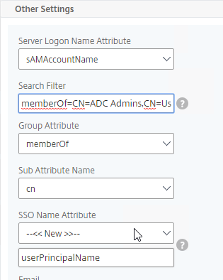
- Server Logon Name Attribute is the name of the LDAP Attribute that contains the user name that was entered by the user in the HTML Logon Form. This attribute is typically set to sAMAccountName, which is the short user name. For multi-domain scenarios, you can change it to userPrincipalName, which has values that look like email address. If it's set to userPrincipalName, then users need to enter their userPrincipalName in the ADC HTML Logon Page. Karim Buzdar at samAccountName Vs userPrincipalName explains the difference between the two.
- SSO Name Attribute is the name of the LDAP attribute that Citrix ADC extracts from LDAP and then uses as the username when performing Single Sign-on (SSON) to back-end web servers (e.g. Citrix StoreFront). For multiple Active Directory domains and SSON to Citrix StoreFront, this field can be set to userPrincipalName to simplify how domain names are transmitted to StoreFront. For more details, see LDAP Authentication: Multiple Domains – UPN Method.
- Search Filter controls the LDAP Query that is sent during LDAP authentication. A common usage of the LDAP Search Filter is to only return users that are members of a specific AD Group. For example, you can limit management access to ADC to only members of an ADC Administrator group. See LDAP Authentication for Management
Multiple Active Directory domains - Citrix ADC is based on UNIX, which means it does not understand Active Directory domains. Configuring ADC to handle multiple domains isn't too difficult, but it's more challenging to send the domain name when performing Single Sign-on to back-end web servers like Citrix StoreFront. For more details, see LDAP Authentication: Multiple Domains.
RADIUS (Remote Authentication Dial-In User Service)
RADIUS Client - RADIUS will not work unless you ask the RADIUS administrator to add Citrix ADC NSIP (or SNIP if load balancing) as a RADIUS Client. Ask the RADIUS server administrator to add the ADC NSIP and SNIP as RADIUS Clients.
- Secret key - The RADIUS administrator then gives you the secret key that was configured for the RADIUS Client. You enter this secret key in Citrix ADC when configuring RADIUS authentication.
RADIUS authentication process:
- HTML Form to gather credentials - Citrix ADC prompts the user to enter username and passcode, typically from an ADC-generated HTML Form.
- Send login request to RADIUS server - Citrix ADC sends a login request (Access-Request) to the RADIUS Server on UDP 1812. Since it's UDP, there's no acknowledgment from the Server.
- Passcode encryption using shared secret - The user's passcode in the RADIUS packet is encrypted using the RADIUS Client's shared secret key that is configured on the Citrix ADC and RADIUS Server. The secret key entered on Citrix ADC must match the secret key configured on the RADIUS Server. Each RADIUS Client usually has a different secret key.
- RADIUS Attributes - The RADIUS Client (Citrix ADC) adds RADIUS attributes to the packet to help the RADIUS Server identify how the user is connecting. These attributes include: time of day, client IP, etc.
- RADIUS Server:
- RADIUS Clients configured on RADIUS Server - The RADIUS Server first verifies that the RADIUS Client (Citrix ADC) is authorized to perform authentication. The NAS IP (Citrix ADC Source IP) of the RADIUS Access-Request packet is compared to the list of RADIUS Clients configured on the RADIUS Server. If there's no match, RADIUS does not respond.
- Shared secret - The RADIUS server finds the RADIUS Client and looks up the shared secret key. The secret key decrypts the passcode in the RADIUS Access-Request packet.
- Verify RADIUS Attributes - RADIUS Server uses the RADIUS Attributes in the Access-Request packet to determine if authentication should be allowed or not.
- Authenticate the user - RADIUS authenticates the user. Most RADIUS Server products have a local database of usernames and passwords. Some can authenticate with other authentication providers, like Active Directory.
- Access-Accept and Attributes - RADIUS sends back an Access-Accept message. This response message can include RADIUS Attributes, like a user's group membership.
- RADIUS Challenge - RADIUS Servers can also send back an Access-Challenge, which asks the user for more information. Citrix ADC displays the RADIUS-provided Challenge message to the user, and sends back to the RADIUS Server whatever the user entered.
- SMS authentication uses RADIUS Challenge. The RADIUS server might send a SMS passcode to a user's phone using SMS. Then RADIUS Challenge prompts the user to enter the SMS passcode.
- Extract RADIUS Attributes - Citrix ADC can be configured to extract the returned RADIUS Attributes and use them for authorization (e.g. AAA Groups).
SAML (Security Assertion Markup Language)
SAML uses HTTP Redirects to perform its authentication process. This means that HTTP Clients that don't support Redirects (e.g. Citrix Receiver) won't work with SAML.
SAML SP - The resource (webpage) the user is trying to access is called the SAML SP (Service Provider). No passwords are stored or accessible here.
SAML IdP- The authentication provider is called the SAML IdP (Identity Provider). This is where the usernames and passwords are stored and verified.
SAML SP Authentication Process:
- User tries to access a Citrix ADC VIP (Citrix Gateway or AAA) that is configured for SAML SP Authentication.
- Citrix ADC creates a SAML Authentication Request and signs it using a certificate (with private key) on the ADC.
- Citrix ADC sends to the user's browser the SAML Authentication Request, and a HTTP Redirect (301) that tells the user's browser to go to the SAML IdP's authentication Sign-on URL (SSO URL).
- The user's browser redirects to the IdP's Sign-on URL and gives it the SAML Authentication Request that was provided by the Citrix ADC.
- The SAML IdP verifies that the SAML Authentication Request was signed by the Citrix ADC's certificate.
- The SAML IdP authenticates the user. This can be a web page that asks for multi-factor authentication. Or it can be Kerberos Single Sign-on. It can be pretty much anything.
- The SAML IdP creates a SAML Assertion containing SAML Claims (Attributes). At least one of the attributes is Name ID, which usually matches the user's email address. The SAML IdP can be configured to send additional attributes (e.g. group membership).
- The SAML IdP signs the SAML Assertion using its IdP certificate (with private key).
- The SAML IdP sends the SAML Asseration to the user's browser and asks the user's browser to Redirect (301) back to the SAML SP's Assertion Consumer Service (ACS) URL, which is different from the original URL that the user requested in step 1.
- The user's browser redirects to the ACS URL and submits the SAML Assertion.
- The SAML SP verifies that the SAML Token was signed by the SAML IdP's certificate.
- The SAML SP extracts the Name ID (email address) from the SAML Assertion. Note that the SAML SP does not have the user's password; it only has the user's email address.
- The SAML SP sends back to the user's browser a cookie that indicates that the user has now been authenticated.
- The SAML SP sends back to the user's browser a 301 Redirect, which redirects the browser to the original web page that the user was trying to access in step 1.
- The user's browser submits the cookie to the website. The website uses the cookie to recognize that the user has already been authenticated, and lets the user in.
Multiple SAML SPs to one SAML IdP - The SAML IdP could support authentication requests from many different SAML SPs, so the SAML IdP needs some method of determining which SAML SP sent the SAML Authentication Request. One method is to have a unique Sign On URL for each SAML SP. Another method is to require the SAML SP to include an Issuer Name in the SAML Authentication Request. In either case, the SAML IdP looks up the SAML SP's information to find the SAML SP's certificate (without private key), and other SP-specific information.
SAML Certificates:
- SP Certificate - Citrix ADC uses a certificate to sign the SAML Authentication Request. This Citrix ADC certificate must be copied to the IdP.
- IdP Certificate - The IdP uses a certificate to sign the SAML Assertion. The IdP certificate must be installed on the Citrix ADC.
SAML Configuration is usually performed first on the IdP - at the IdP, you add a Relying Party or Service Provider.
- Provide the following information for the Server Provider (ADC)
- Service Provider Assertion Consumer Service (ACS) URL - for Citrix Gateway, the URL ends in /cgi/samlauth
- Service Provider Entity ID - to identify the service provider - configure it identically on both the IdP and on the ADC
- IdP attribute (e.g. email address) that you want to send back in the Name ID claim
- Download the IdP's certificate and import it to the ADC
- Copy the IdP's Sign On URL and configure it on the ADC
Shadow Accounts - The SAML IdP sends the user's email address to the SAML SP. The SAML SP has its own directory it uses to authorize users to SP resources. The email address provided by the SAML IdP is matched with a user account at the SAML SP's directory. Even though the user's password is never seen by the SAML SP, you still need to create user accounts for each user at the SAML SP. These SAML SP user accounts can have fake passwords. The SAML SP user accounts are sometimes called shadow accounts. The shadow accounts are assigned permissions to SP resources, like Citrix Virtual Apps and Desktops (CVAD) published applications.
- Shadow Account userPrincipalNames - If the SAML SP relies on Active Directory for permissions, then the local AD shadow accounts must have a userPrincipalName that matches the email address claim that came from the SAML IdP. You might have to add custom DNS suffixes to your Active Directory forest to make the UPNs match.
- Citrix Virtual Apps and Desktops (CVAD) is an example Service Provider that relies on Active Directory.
SAML and lack of user password - Not having access to passwords limits the back-end Single Sign-on authentication options at the SAML SP. Without a password, you can't authenticate to Active Directory using LDAP or NTLM.
- Kerberos Constrained Delegation (KCD) and Citrix VDA - Citrix ADC supports Kerberos Constrained Delegation (KCD), which means ADC can request Kerberos tickets from a Domain Controller on behalf of another user. KCD does not need access to the user's password. However, Citrix Virtual Apps and Desktops (CVAD) does not support Kerberos tickets for VDA authentication.
- Smart Card Logon to Citrix VDA - Instead of Kerberos tickets, Citrix VDA supports authentication using user certificates (smart card certificates) generated by Citrix Federated Authentication Service (FAS). FAS generates certificates for local Active Directory shadow accounts whose UPN matches the email addresses provided by the SAML IdP.
Kerberos
Kerberos authentication process (simplified):
- User tries to access a web page that is configured with Negotiate authentication.
- To authenticate to the web page, the user must provide a Kerberos Service ticket. The Kerberos Service ticket is requested from a Domain Controller.
- The Kerberos Service ticket is limited to the specific Service that the user is trying to access. In Kerberos parlance, the resource the user is trying to access is called the Service Principal Name (SPN). User asks a Domain Controller to give it a ticket for the SPN.
- Web Site SPNs are usually named something like HTTP/www.company.com. It looks like a URL, but actually it's not. There's only one slash, and there's no colon. The text before the slash is the service type. The text after the slash is the DNS name of the server running the service that the user is trying to access.
- If the user has not already been authenticated with a Domain Controller, then the Domain Controller will prompt the user for username and password.
- The Domain Controller returns a Ticket Granting Ticket (TGT).
- The user presents the TGT to a Domain Controller and asks for a Service Ticket for the Target SPN. The Domain Controller returns a Service Ticket.
- The user presents the Service Ticket to the web page the user originally tried to access in step 1. The web page verifies the ticket and lets the user in.
The Service and the Domain Controller do not communicate directly with each other. Instead, the Kerberos Client talks to both of them to get and exchange Tickets.
Kerberos Delegation - The Kerberos Service Ticket only works with the Service listed in the Ticket. If that Service needs to talk to another Service on the user's behalf, this is called Delegation. By default, Kerberos will not allow this Delegation. You can selectively enable Delegation by configuring Kerberos Constrained Delegation in Active Directory.
- In Active Directory Users & Computers, edit the AD Computer Account for the First Service. On the Delegation tab, specify the Second Service. This allows the first Service to delegate user credentials to the Second Service. Delegation will not be allowed from the First Service to any other Service.
Kerberos Impersonation - If Citrix ADC has the user's password (maybe from LDAP authentication), then Citrix ADC can simply use those credentials to request a Kerberos Service Ticket for the user from a Domain Controller. This is called Kerberos Impersonation.
Kerberos Constrained Delegation - If the Citrix ADC does not have the user's password, then Citrix ADC uses its own AD service account to request a Kerberos Service Ticket for the back-end service. The service account then delegates the user's account to the back-end service. In other words, this is Kerberos Constrained Delegation. On Citrix ADC , the service account is called a KCD Account.
- The KCD Account is just a regular user account in AD.
- Use setspn.exe to assign a Kerberos SPN to the user account. This action unlocks the Delegation tab in Active Directory Users & Computers.
- Then use Active Directory Users & Computers to authorize Kerberos Delegation to back-end Services.
Negotiate - Kerberos and NTLM - Web Servers are configured with an authentication protocol called Negotiate (SPNEGO). This means Web Servers will prefer that users login using Kerberos Tickets. If the client machine is not able to provide a Kerberos ticket (usually because the client machine can't communicate with a Domain Controller), then the Web Sever will instead try to do NTLM authentication.
- NTLM is a challenge-based authentication method. NTLM sends a challenge to the client, and the client uses the user's Active Directory password to encrypt the challenge. The web server then verifies the encrypted challenge with a Domain Controller.
- Negotiate on client-side with NTLM Web Server fallback - Citrix ADC appliances can use Negotiate authentication protocol on the client side (AAA or Citrix Gateway). Negotiate will prefer Kerberos tickets. If Kerberos tickets are not available, then Negotiate can use NTLM as a fallback mechanism. In the NTLM scenario, Citrix ADC can be configured to connect to a domain-joined web server for the NTLM challenge process. By using a separate web server for the NTLM challenge, there's no need to join the Citrix ADC to the domain.
HTTP
URLs
HTTP URL format: e.g. https://www.corp.com:444/path/page.html?a=1&key=value
- https:// = the scheme. Essentially, it's the protocol the browser will use to access the web server. Either http (clear-text) or https (SSL/TLS).
- www.corp.com = the hostname. It's the DNS name that the browser will resolve to an IP address. The browser then connects to the IP address using the specified protocol.
- :444 = port number. If not specified, then it defaults to port 80 or port 443, depending on the scheme. Specifying the port number lets you connect to a non-standard port number, but firewalls might not allow it.
- /path/page.html = the path to the file that the Browser is requesting.
- ?a=1&key=value = query parameters to the file. The query clause beings with a ? immediately following the file name. Multiple parameters (key=value pairs) are separated by &. Query parameters are a method for the HTTP Client to upload a small amount of data to the Web Server. There can be many query parameters, or just one parameter.
- An alternative to query parameters is to put the uploaded data in the body of an HTTP POST request.
URLs must be safe encoded (Percent encoded), meaning special characters are replaced by numeric codes (e.g. # is replaced by %23). See https://en.m.wikipedia.org/wiki/Percent-encoding.
HTTP Methods - HTTP supports several HTTP methods, with the most common being GET, POST, PUT, and DELETE. There are also less common HTTP methods like OPTIONS and CONNECT. Web Browsers typically only use GET and POST in their HTTP Requests. The other HTTP Methods are used by REST APIs.
- GET method retrieves (downloads) a file.
- Parameters to the GET request are added to the end of the URL in the Query section.
- HTTP Request Headers also affect how the file is retrieved.
- POST method uploads data to a web server (web application). The POST method includes a path to a web server script file that will process the upload. The HTTP Body of a POST Method usually contains one of the following;
- HTML Form field data - user fills out a form and clicks Submit. This causes the browser to send a POST Request with the Body containing each of the HTML Form field names and the values entered by the user. The format of the POST Body is similar to field1name=value&field2name=value. Web Servers extract the field names and their values and saves them as variables that the web server scripts can access.
- JSON or XML file upload - these JSON or XML files are generated by scripts or programs. The web server receives the JSON or XML files and does something programmatic with them.
- Raw file upload - typically a full file that needs to be saved somewhere on the web server.
- HTTP-based REST APIs use all four of the common HTTP Methods for the following purposes:
- GET method retrieves an object in JSON or XML format. The arguments for the retrieval of the object (or objects) are specified in a JSON or XML document included in the body of the HTTP Request.
- POST method creates a new object. The POST method path specifies the name of the object that needs to be created. The arguments for the new object are specified in a JSON or XML document included in the body of the HTTP Request.
- PUT method modifies an existing object. The PUT method path specifies which object needs to be modified. The arguments for the modified object are specified in a JSON or XML document included in the body of the HTTP Request.
- DELETE method deletes an existing object. The DELETE method path specifies which object needs to be deleted. The arguments for the object deletion operation are specified in a JSON or XML document included in the body of the HTTP Request.
HOST Header - web browsers insert a HTTP header named Host into the HTTP Request Packet. The value of this Host header is whatever hostname the user typed into the browser's address bar. It's the part of the URL after the scheme (http://), and before the port number (:81) or path (/).
- Web Servers use the Host Header to serve multiple websites on one IP address - Each hosted website has a different Host Header value configured. The web server matches the Host header in the HTTP Request packet with the website's configured Host Header value and serves content from the matching website.
- In IIS, if you edit the port number bindings for a website, there's a field to enter a host name. If you enter a host name value in this field, then the website can only be accessed if the same value is in the HTTP Request's Host header. If you try to connect to the website by entering its IP address into your browser's address bar, then you won't see the website because the Host header won't match.
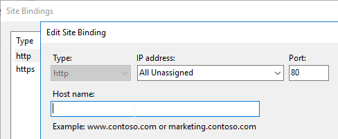
- In IIS, if you edit the port number bindings for a website, there's a field to enter a host name. If you enter a host name value in this field, then the website can only be accessed if the same value is in the HTTP Request's Host header. If you try to connect to the website by entering its IP address into your browser's address bar, then you won't see the website because the Host header won't match.
- Citrix ADC Load Balancing Monitors do not include the Host Header by default. If the Web Server requires the Host Header, then you must modify the Citrix ADC Monitor configuration to specify the Host header.
HTTP Body vs HTML Body - HTTP Body and HTML Body are completely different.
- An HTML file contains an HTML Head section and an HTML Body section. But these are just sections in one HTML file.
- An HTTP Response Body contains an entire HTML file. Or an HTTP Body can contain non-HTML files or data. HTML is just one of the file types that an HTTP Body can transport.
For a detailed explanation of the HTTP Protocol including the various HTTP headers, see the book named HTTP: The Definitive Guide. This book was published years ago but is still relevant today.
WebSocket - WebSocket enables a client machine and a server machine to use HTTP to establish a long-lived, two-way (bidirectional) TCP communications channel. WebSocket is initiated from the client machine, so you don't have to open any firewall ports. The client machine sends an HTTP Request to a WebSocket server asking the WebSocket server to upgrade the HTTP Connection to a WebSocket connection. After the connection upgrade, HTTP is no longer needed, and the two machines can transmit anything across the WebSocket connection. The bidirectional aspect of WebSocket allows a server to send packets to the client machine without having to wait for a request to come from the client. One of the main purposes of WebSocket is to bypass inbound firewall restrictions.
- HTTP and WebSocket - Not all HTTP servers support WebSocket. WebSocket is not HTTP. HTTP is only used to setup the WebSocket connection. Once WebSocket is established, then there's no more HTTP. WebSocket runs on the same port numbers as HTTP, usually SSL/TLS port 443.
- WebSocket and Citrix Cloud Connector - Citrix Cloud Connector establishes a WebSocket connection with Azure Service Bus. Citrix Cloud then uses the Azure Service Bus connection to send commands to the on-premises Citrix Cloud Connector machines.
- WebSocket and Citrix Workspace app for HTML5 - if a user does not have Workspace app installed on the local machine, then the user can instead use a "light" workspace app, which means HTML5. When the user launches an app from StoreFront, the "light" client is downloaded as JavaScript that initiates a WebSocket connection with Citrix Gateway. Citrix Gateway then creates an ICA connection to the VDA machine.
Cookies
Client-side Data Storage - Web Servers sometimes need to store small pieces of data in a user's web browser. The user's browser is then required to send the data back to the web server with every HTTP Request. Cookies facilitate this small data storage.
Set-Cookie - Web Servers add a Set-Cookie header to the HTTP Response. This Response Header contains a list of Cookie Names and Cookie Values.
Cookies are linked to domains - The Web Browser stores the Cookies in a place that is associated with the DNS name (host name) that was used to access the web site. The next time the user submits an HTTP Request to that DNS name, all Cookies associated with that host name are sent in the HTTP Request using the Cookie HTTP Request header.
- Notice that the two headers have different names. HTTP Response has a Set-Cookie header, while HTTP Request has a Cookie header.
Cookie security - Cookies from other domains (other DNS names, other web servers) are not sent. Cookies usually contain sensitive data (e.g. session IDs) and must not be sent to the wrong web server. Hackers will try to steal Cookies so they can impersonate the user.
Cookie lifetimes are either Session Cookies, or Persistent Cookies. Session Cookies are stored in the browser's memory and are deleted when the browser is closed. Persistent Cookies are stored on disk and available the next time the browser is launched.
- Expiration date/time - Persistent Cookies sent from the Web Server come with an expiration date/time. This can be an absolute time, or a relative time.
Citrix ADC Cookie for Load Balancing persistence - Citrix ADC can use a Cookie to maintain load balancing persistence. The name of the Cookie is configurable. The Cookie lifetime can be Session or Persistent. The Cookie's value specifies the name of the Load Balancing Service (web server) that the user's browser last accessed so the same Service can be used in the next connection.
Web Server Sessions
Web Server Sessions preserve user data for a period of time - When users log into a web site, or if the data entered by a user (e.g. shopping cart) needs to be preserved for a period of time, then a Web Server Session needs to be created for each user.
Web Server Sessions are longer than TCP Connections - Web Server Sessions live much longer than a single TCP Connection, so TCP Connections cannot delineate a session boundary.
Each HTTP Request is singular - There's nothing built into HTTP to link one HTTP Request to another HTTP Request. Various fields in the HTTP Request can be used to simulate a Web Server Session, but technically, each HTTP Request is completely separate from other HTTP Requests, even if they are from the same user/client.
Server-side Session data, and Client-side Session ID - Web Server Sessions have two components - server-side session data, and some kind of client-side indicator so the web server can link multiple HTTP Requests to the same server-side session.
A Cookie stores the Session ID - On the client-side, a session identifier is usually stored in a Cookie. Every HTTP Request performed by the client includes the Cookie, so the web server can easily associate all of these HTTP Requests with a Server-side session.
Server-side data storage - On the server-side, session data can be stored in several places:
- Memory of one web server - this method is the easiest, but requires load balancing persistence
- Multiple web servers accessing a shared memory cache (e.g. Redis)
- Shared Database - each load balanced web server can pull session data from the database. This is typically slower than memory caches.
Load Balancing Persistence and Web Server Sessions - some web servers store session data on the same web server the user initially connected to. If the user connects to a different web server, then the old session data can't be retrieved, thus causing a new session. When load balancing multiple identical web servers, to ensure the user always connects to the same web server that was initially chosen by the user, configure Persistence on the load balancer.
Persistence Methods - When the user first connects to a Load Balancing VIP, Citrix ADC uses its load balancing algorithm to select a web server. Citrix ADC then needs to store the chosen server's identifier somewhere. Here are common storage methods:
- Cookie - the chosen server's identifier is saved on the client in a Cookie. The client includes the ADC persistence Cookie in the next HTTP request, which lets Citrix ADC send the next HTTP Request to the same web server as before. Pros/Cons:
- No memory consumption on Citrix ADC
- Cookie can expire when the user's browser is closed
- Each client gets a different Cookie, even if multiple clients are behind a common proxy.
- However, not all web clients support Cookies.
- Source IP - Citrix ADC records the client's Source IP into its memory along with the web server it chose using its load balancing algorithm. Pros/Cons:
- Uses Citrix ADC Memory
- If multiple clients are behind a proxy (or common outgoing NAT), then all of these clients go to the same web server. That's because all of them appear to be coming from one IP address. The same is true for all clients connecting through one Citrix Gateway.
- Works with all web clients.
- Rule-based persistence - use a Citrix ADC Policy Expression to extract a portion of the HTTP Request and use that for persistence. Ultimately, it works the same as Source IP, but it helps for proxy scenarios if the proxy includes the Real Client IP in one of the HTTP Request Headers (e.g. X-Forwarded-For).
- Server Identifier - the HTTP Response from a web server instructs the web client to append a Server ID to every URL request. The Citrix ADC can match the Server ID in the URL with the web server. Citrix Endpoint Management (XenMobile) uses this method.
Authentication and Cookie Security - If a web site requires authentication, it would be annoying if the user had to login again with every HTTP Request. Instead, most authenticated web sites return a Cookie, and that Cookie is used to authorize subsequent HTTP Requests from the same user/client/browser.
- Web App Firewall (WAF) Cookie Protection - Since the Web Session Cookie essentially grants permission, security of this Cookie is paramount. Citrix ADC Web App Firewall has several protections for Cookies.
HTML Forms
Get Data from user - if the web site developer wants to collect any data from a user (e.g. Search term, account login, shopping cart item quantity, etc.), then the web developer creates HTML code that contains a element.
Form fields - Inside the